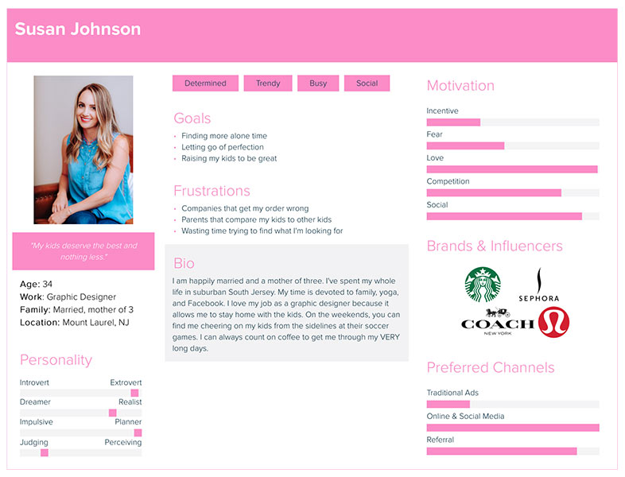
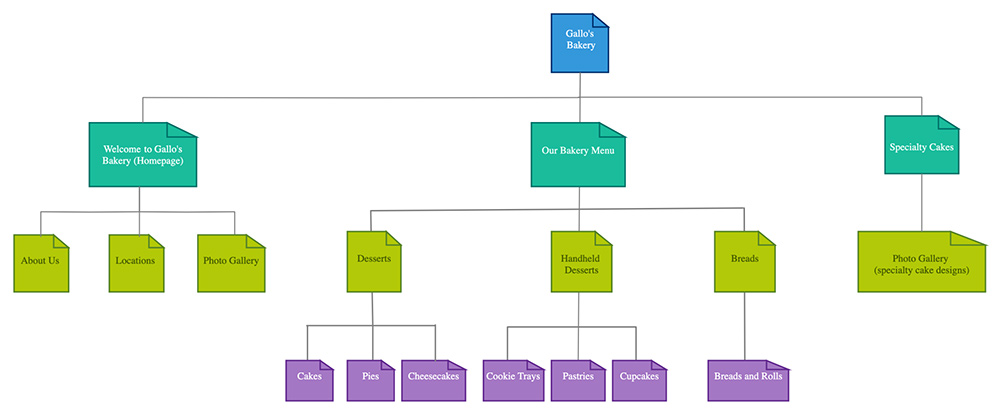
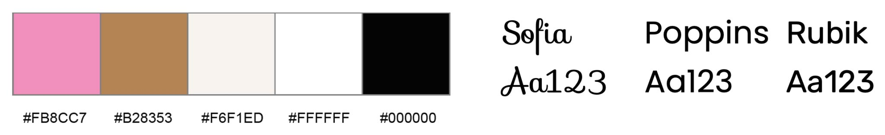

Gallo’s Bakery is a small, local business with three locations in South Jersey. They have been serving gourmet, custom-designed baked goods for any occasion since 1985. The website aims to attract customers to their store locations by displaying attractive photos of their baked goods and custom cakes. Since Gallo’s Bakery does not offer online ordering, the website includes contact information and a menu to attract potential customers.
The website appeals to people in the local area in need of gourmet cakes or other baked goods for special occasions. In particular, women are more likely to purchase from bakeries than men. Gallo’s reaches this audience since the majority of photos on the website display children’s birthday cakes or wedding cakes. A user persona was created to reflect this target audience.
One immediate goal is to restructure the homepage. This could include adding more tabs to the menu bar to reduce clutter on the homepage and putting the photos in one place (perhaps in a photo gallery or carousel). The homepage is the first thing that a customer sees on a website, so a simple, organized design would make it more attractive and easier to navigate. Another immediate goal is to change the menu under the bakery menu tab so that it has large, colorful text. The menu is important because it shows potential customers what baked goods and flavors Gallo’s Bakery offers.
Three Gallo’s Bakery customers participated in the card sort exercise and generated similar results. Participant one chooses Gallo’s for family cakes since they are safe for her child with a nut allergy. Participant two uses Gallo’s to purchase pastries for social events. Participant three has purchased Gallo’s custom-designed cakes for special occasions. The participants were 40-50 years old, which is slightly older than the target audience, but they provided unique experiences. Participants one and three partially fit the target audience since they are mothers.
Two participants suggested adding a photo gallery to the homepage to enhance the website’s visual appeal, and the third participant dedicated a separate category for the photo gallery. Two participants agreed that basic information such as “About Us” and “Locations” would be most accessible on the homepage. Participant three believed that those two items should be individual categories that can be read if desired. However, none of the participants felt that the location of this information was imperative to the overall site. The site map contains three categories: Welcome to Gallo’s Bakery (homepage), Our Bakery Menu, and Specialty Cakes. The homepage includes three sections: About Us, Locations, and Photo Gallery. The site map accounts for the preferences of the majority of the participants.
All three participants agreed that a “Bakery Menu” category should include sections to reflect the different products offered. Participant two preferred an additional set of sections under the “Our Bakery Menu” category to include desserts, handheld desserts, and breads. This is reflected in the site map.
The participants used all of the key terms provided. Based on previous experience, participant three made specialty cakes a new category to showcase photos of custom cake designs. An additional photo gallery is listed under Specialty Cakes in the site map.
Three wireframes were created for the homepage and menu page. The first homepage wireframe consisted of relevant information below photo carousels and images. This design made the homepage appear too long and narrow and contained excess white space on either side of the photo galleries and images. The second and third wireframe designs for the homepage contained titles and text beside photo carousels and images. They also contained a larger area for a customer testimonial. Unlike the first wireframe, these wireframes optimize the space beside the photo carousels and images. The third wireframe was ultimately selected since the photo carousels and images alternate sides on the page, ensuring that text and photos do not have specific columns.
The menu wireframes consist of three categories with their sections represented further down on the page. While this design had a clear layout, there were no images. The second wireframe attempted to solve this issue by applying a photo background where the categories were first introduced at the top of the page. However, laying text over images has the issue of not appearing visible. The third wireframe was ultimately selected since it contained an image under each section. This was ideal since it featured images of the different types of Gallo’s Bakery products. This wireframe was later modified to include two columns of text under each category.
The final website design contains three fonts. Sofia is a handwriting font that looks similar to the font used in the Gallo’s Bakery logo. It was important to find a similar font since the website title appears in a large font at the top of each page. The other two fonts are Poppins and Rubik, which are both Sans-Serif fonts. Poppins is a legible font with a large font family, making it useful in multiple areas of the website including headings and bakery menu items on the Our Bakery Menu page. Rubik is primarily used for paragraph text since it is legible at a smaller size and complements headings in Poppins since both fonts have rounded edges.
The final color palette includes five colors: pink (#FB8CC7), brown (#B28353), light brown (#F6F1ED), white (#FFFFFF), and black (#000000). The original website consisted of blue, white, and black text. The redesigned color palette was chosen to match the logo. Shades of pink and brown are used in the logo in addition to black and white. The pink brightens up the website, and the white provides contrast when used on a pink background. The brown text complements the pink text, and the light brown provides a pale background color without drawing too much attention to it. Black was used for visible hover effects.
The card sort exercise revealed that most participants wanted the information from the location tabs to be accessible on the homepage. The final wireframes contained a simplified three-column design in the footer, but additional information was added to the final high-resolution prototype to account for the participants’ preferences. The final footer contains social media links in addition to the addresses, phone numbers, and hours that were previously listed on the Gallo’s Bakery website. The location tabs were not included in the final prototype since this information was incorporated into the footer. Additional changes were applied to the homepage that altered text placement. The text on the homepage beside the photo carousels was adjusted after the addition of white boxes behind the text. The text beneath the titles was organized into two paragraphs to fit inside the boxes better. The quote section on the homepage was also combined with the section containing the “South Jersey Magazine Best of the Best Award Winning Recognition” title and image.
This interactive prototype. contains clickable photo carousels in addition to hover states over the “Our Bakery Menu” tab and categories on the “Our Bakery Menu” page.
The final high-resolution prototype accomplished two immediate goals: logically organizing the homepage and making the bakery menu visually appealing. The homepage’s two photo carousels display the highest quality photos showcasing Gallo’s Bakery’s cake designs and interiors and exteriors of their store locations. Changes in font weight, style, and color were also applied throughout the final prototype to draw emphasis amid areas heavily concentrated with single-colored text. The bakery menu was divided into three sections for desserts, handheld desserts, and breads to reflect the results from the card sort. Hover effects were implemented for each of these categories to allow users to jump to the corresponding part of the menu. A Specialty Cakes tab was added to the menu bar to reflect Gallo’s cake designs that were not present on the homepage. Finally, the location tabs on Gallo’s original website were removed, and the information was transferred to the footer to allow for more convenient access.